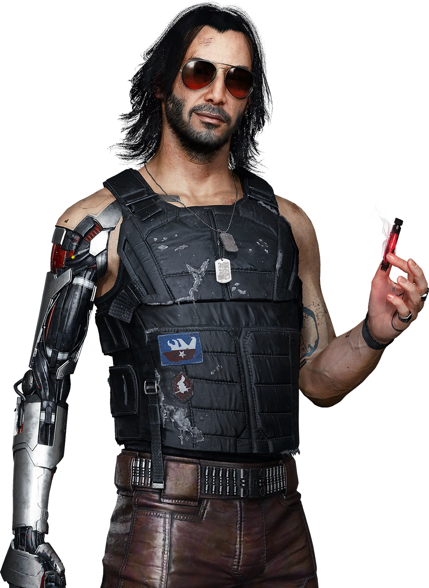

V


Johnny Silverhand
Il semble que devenir une légende du rock sans les excès habituels - sexe, drogues, dépression, problèmes juridiques et relations toxiques - soit possible. Johnny Silverhand l'a fait à sa manière classique. En tant que leader de Samurai, il était un visionnaire charismatique, un rebelle avec une cause authentique, et un ennemi farouche des corporations, en particulier Arasaka. Il a créé des succès emblématiques comme "Chippin' In" et "Never Fade Away". Bien qu'il soit décédé lors de l'attaque de la tour Arasaka, son esprit rebelle continue de vivre à travers la biopuce Relic, actuellement hébergée dans le cerveau de V. Cependant, pour Johnny, qui est un narcissique égocentrique, cette situation est un véritable enfer, bien loin de l'agréable alternative qu'est la prison du cyberespace.
Jackie Welles
Fils d'Heywood et fier de l'être, Jackie est également le fils de Mama Welles, ce dont il est encore plus fier. Il est têtu, et quand il veut quelque chose, il n'arrête pas (et n'arrête pas d'en parler) tant qu'il ne l'a pas. Jackie a toujours voulu beaucoup de choses, peut-être un peu trop. À l'adolescence, il a rejoint le gang des Valentinos, pour finalement les quitter en prenant conscience de son véritable potentiel. Pendant des années, il s'est démené dans le monde impitoyable des mercs; forcément, quand on veut s'asseoir à la table des grands, il faut commencer par être pris au sérieux. Dans la vie, Jackie a toujours eu pour but de devenir une légende à l'Afterlife et de ramasser un paquet d'eddies au passage.